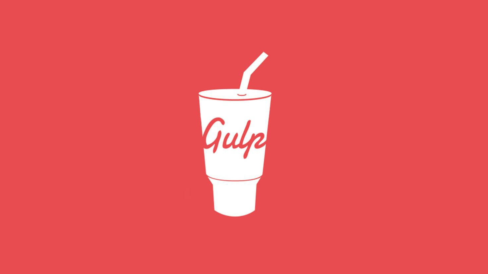

GULP 4 DEMO

所使用套件
gulp-sass - 強大的 CSS 預處理器
https://www.npmjs.com/package/gulp-sass
gulp-plumber - 讓 Gulp 在運行的過程中遇錯不會中斷
https://www.npmjs.com/package/gulp-plumber
gulp-postcss - 強大的 CSS 後處理器
https://www.npmjs.com/package/gulp-postcss
autoprefixer - 自動為你的 CSS 補上前綴詞
https://www.npmjs.com/package/autoprefixer
gulp-load-plugins - 簡化 gulp 載入流程
https://www.npmjs.com/package/gulp-load-plugins
gulp-babe l- JavaScript ES6 編譯工具
https://www.npmjs.com/package/gulp-babel
@babel/preset-env - JavaScript ES6 編譯工具
https://www.npmjs.com/package/@babel/preset-env
gulp-sourcemaps - 標示壓縮、合併程式碼的原始位置
https://www.npmjs.com/package/gulp-sourcemaps
gulp-concat - 合併串接程式碼
https://www.npmjs.com/package/gulp-concat
Browser Sync - 前端愛用的 Web Server- 包含 Livereload
https://www.npmjs.com/package/browser-sync
https://browsersync.io/docs
gulp-minify-css - CSS 壓縮工具
https://www.npmjs.com/package/gulp-minify-css
gulp-uglify - JavaScript 壓縮工具
https://www.npmjs.com/package/gulp-uglify
minimist - 將指令碼匯入 gulp 流程
https://www.npmjs.com/package/minimist
gulp-if- 將 gulp 加入判斷式
https://www.npmjs.com/package/gulp-if
gulp-imagemin - 圖片壓縮工具
https://www.npmjs.com/package/gulp-imagemin